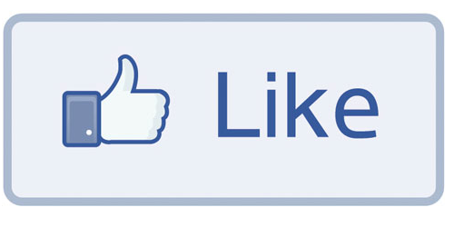

1. You have no friends on Facebook
You may have 538 “friends” on Facebook, but how many:
- would give you their kidney?
- would lie for you in court?
- would help you remove your drunken penis from a Henry hoover at 3:30am on a Bank Holiday?
I'll give you a clue... none, because they're all cunts.
2. It’s slowly killing you
Your sleep is fucked up and you're stressed because you're up all night making sure you haven't missed out on Stacey's holiday photos or reading comments about last night's episode of Cunts Bake Cakes. All so you have something to talk about with all the other gormless cunts at work tomorrow.
On top of that you were 5 minutes away from giving yourself an aneurysm after spending two hours reading some cunt's diatribe on how Building 7 was demolished by lizard people and a 882 word "How to Tell When Brown Bread is Toasted" guide.
It makes you depressed, resentful and jealous, because the lives you see on Facebook look better than your own and now you have unrealistic expectations and a warped sense of what's normal.
You don't need this shit.
3. Your deepest secrets are now a matter of public record
Because you're an insecure cunt, you feel the need to post every mundane detail of your shit existence to the internet in the hope that some other cunt will send you a reciprocal, meaningless, worthless "Like".
Because of that insecurity, the cunts at Facebook know what your Boxing Day shit sounds and smells like, that you've pre-ordered the lastest sex robot from Japan and that you're reading facebookisforcunts.com.
Good one fuckwad.
4. Life's too short
You're wasting your life posting photos of the shit food your eating and literally nobody cares about, “Liking” photos of ugly cunts' ugly offspring and reading inspirational quotes from failures that can barely string a sentence together.
Think about it, you barely have enough time to hate all the cunts at work and now you're spending your evening raging over some bellend you met briefly in Thailand 6 years ago.
You could be doing something to benefit society… like booking a Dignitas appointment for yourself.
5. Your phone's battery life is already dog shit
You've spent the best part of two months wages on the latest phone that will be out of date next week and barely lasts a day without being charged. Installing the Facebook app and scrolling up and down your newsfeed like a dribbling fucktard is just another stupid thing you do.
You need that battery life for more important things, like sending photos of your genitalia to unsuspecting dating app recipients whilst taking a three hour shit at work.
6. Now the whole world knows you're a cunt
There was a time when you could keep your personal and professional lives separate. Not with Facebook in your life. Now when you get home you have to spend half an hour trying to explain to your girlfriend why the girl at work with big tits has blocked you (again).
And whilst describing how you share the corporate values of your prospective employers, you're trying to gauge if the interviewing panel has seen that gap year photo of you in black face hanging out of the back of a barely legal Thai hooker.
Keep your cuntiness offline and thank me later.
7. You're going to delete Facebook anyway
Are you still going to have Facebook when you're 80? No, so do yourself a favour and delete your account now and start enjoying life without Facebook.

© https://facebookisforcunts.com/